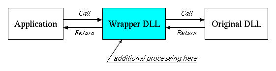
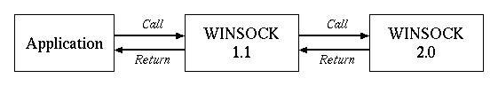
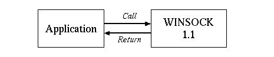

ラッパーDLL は、アプリケーションと元のDLL との間に割り込んで、 アプリケーションからのDLL の呼び出しを横取りして、 本来のDLL とは異なった処理をさせるものです。

アプリケーションからのDLL の呼び出しはラッパーに渡されます。 ラッパーはそこで、付加的な処理を行なって、 元のDLL のエントリを呼び出します。 また、元のDLL の処理結果は一旦ラッパーに返され、 ここでも付加的な処理を行なって、 最終的な結果がアプリケーションに返されることになります。
mDN wrapper では、WINSOCK DLLの
に対するラッパーDLL を提供して、 多言語ドメイン名の名前解決ができるようにします。
WSOCK32.DLL WINSOCK V1.1 WS2_32.DLL WINSOCK V2.0
注 : 16ビット版のWINSOCK (WINSOCK.DLL) は対象外です。
mDN Wrapper はWINSOCK の名前解決に関連したAPI についてのみ 付加的な処理を行ないます。 処理の対象となるWINSOCK APIは以下のものです。
| gethostbyaddr |
| gethostbyname |
| WSAAsyncGetHostByAddr |
| WSAAsyncGetHostByName |
| WSALookupServiceBeginA |
| WSALookupServiceNextA |
| WSALookupServiceEnd |
アプリケーションによっては、 これらのAPI を使わないで独自にドメイン名の解決を行なうものもあります。 例えば、nslookupは、これらのAPI を使わないで、 内部で独自にDNS リクエストの生成、解釈を行なっています。 当然のことながら、これらのアプリケーションについては、 mDN Wrapper では多言語化対応させることはできません。
注 : dnsproxyはネットワーク上でDNS のリクエスト、 レスポンスについて多言語化しますので、 これらのアプリケーションについても多言語化させることができます。 必要に応じて適時使い分けるといいでしょう。 注 : WINSOCK 2.0 には、WIDE CHARACTER ベースの名前解決のAPI として もありますが、これらについてはラップしません。 これらのAPI はマイクロソフト仕様による国際化に対応したものですから、 そのフレームワーク上で使うべきものです。 これらについてはmDN Kit によって他の多言語フレームワークに 変換してしまうのは危険ではないか、と判断しました。
WSALookupServiceBeginW WSALookupServiceNextW
上記以外のWINSOCK API については、mDN Wrapper はなにもしないで、 元のWINSOCK API を呼び出します。 WINSOCK DLL にはドキュメントされていないエントリも含まれています。 それらのエントリについては、呼び出しパラメタ等が判らないので、 ラッパー内のコードから元のDLL のエントリを呼び出すことができません。 そこで、mDN Wrapper は上記以外のエントリについては、 function forwarding によって、 DLL の呼び出しが元のDLL にフォワードされるようにしています。
'function forwarding' を使う場合には、 ラッパーDLL 作成時にフォワード先のDLL 名を明示的に指定する必要があり、 そのDLL 名はラッパー自身とは別の名前、 すなわち元のDLL とも別の名前、になっていなければなりません。 mDN wrapper では、元のWINSOCK DLL を名前を変えてコピーし、 それをフォワード先のDLL として使用するものとします。
wsock32.dll -> wsock32o.dll ws2_32.dll -> ws2_32o.dll
ラッパーDLL は元のWINSOCK DLL と同じ名前で作成されます。 従ってmDN wrapper がインストールされた状態では、
となります。
wsock32.dll mDN Wrapper for WINSOCK V1.1 ws2_32.dll mDN Wrapper for WINSOCK V2.0 wsock32o.dll Original WINSOCK V1.1 DLL ws2_32o.dll Original WINSOCK V2.0 DLL
ドメイン名の変換は、以下のタイミングで行なわれる必要があります。
- DNS へのリクエスト時
ローカルエンコーディング -> DNS エンコーディング - DNS からの応答受信時
DNS エンコーディング -> ローカルエンコーディング
同期API においては、 ローカルエンコーディングからDNS エンコーディングへの変換は、 元のAPI を呼び出す前に行われ、 DNS エンコーディングからローカルエンコーディングへの変換は、 元のAPI から復帰してきたところで行なわれます。
しかし、WINSOCK の以下のAPI は非同期API で、 DNS からの応答受信前に復帰してしまいます。
- WSAAsyncGetHostByAddr
- WSAAsyncGetHostByName
これらのAPI においては、名前解決の完了は、 Windows へのメッセージによって通知されます。 このため、 DNS エンコーディングからローカルエンコーディングへの変換を行なうには、 ラッパーは通知先のウィンドウプロシジャのメッセージキューをフックして、 この完了メッセージを捕獲する必要があります。
そこで、非同期API が呼び出された場合には、mDN Wrapper は、 通知先のウィンドウプロシジャ（これはAPI のパラメタで指示されます）に フックを設定します。 フックが完了メッセージ（これもAPI のパラメタで指示されます）を検出したなら、 フックは結果の格納領域（これもAPI のパラメタで指示されています）のドメイン名を、 DNS 側のエンコーディングからローカルエンコーディングに変換するものとします。
WINSOCK DLL はWindows のシステムディレクトリに置かれています。 WINSOCK を確実にラップするには、システムディレクトリにおいて
を行なう必要があります。
- オリジナルWINSOCK DLL の名前の変更
- ラッパーDLL の導入
しかし、システムディレクトリでこのようなDLL の置き換えを行なうのは 大変危険な操作になります。
a) DLL を入れ替えた状態で、もういちど同じ操作を行なうと、 オリジナルのWINSOCK DLL が失われてしまうことになります。 b) サービスパックやアプリケーションなどで、 WINSOCK DLL を再導入するものがありますが、 これによってもWINSOCK が利用不能になることがあります。
このような状態になると、ネットワーク機能が全く使えなくなったり、 最悪はWindows の起動すらできなくなる可能性があります。
そこで、mDN Wrapper では、上のようなシステムレベルのラップではなく、 アプリケーションに対するラップを基本機能として提供するものとします。
Windows において、DLL は、基本的には
アプリケーションのロードディレクトリ %SystemRoot%\System32 %SystemRoot% PATH で指示されるディレクトリ
の順序で検索されて、最初に見つかったものがロードされます。 ですから、一般的には、 DLL をアプリケーションのロードディレクトリにインストールすれば、 そのアプリケーションからのWINSOCK の呼び出しをラップすることができます。
ただし、いくつかのアプリケーション、DLL では、 検索パスを経由せずに特定のDLL をリンクするようになっているものがあります。 このような構成のアプリケーション、DLL が使われた場合には mDN Wrapper では対処することはできません。
注 : Netscapeは特定DLL にバインドされているようで、 アプリケーションディレクトリへのインストールではラップできません。 WINSOCK DLL 自体もシステムディレクトリの関連DLL に バインドされているようです。 一方、Internet ExploreやWindows Media Playerは 標準のサーチパスに従っているので、 ラップすることができます。
WINSOCK 2.0 をサポートしているWindows には、 WINSOCK の1.1 と2.0 のそれぞれに対応するDLL があり、 WINSOCK 1.1 のAPI の呼び出しは 2.0 の同じエントリにリダイレクトされるようになっています。

この場合には1.1 に対する呼び出しも2.0 に対する呼び出しも、 ともにV2.0用のDLL に渡されるので、 2.0用のラッパーDLL 側だけで エンコーディングの変換を行なうようにするべきでしょう。
一方、WINSOCK 1.1 しかサポートしていない場合(Win95)には、 1.1 に対応したDLL しかありません。

この場合には必然的に1.1 用のラッパーDLL で エンコーディングを変換しなければなりません。
mDN Wrapepr がwindows のシステムディレクトリにインストールされた場合には、 上の通りに動作するので、
する必要があります。
WINSOCK 2.0 あり 2.0 ラッパーで変換 WINSOCK 1.1 のみ 1.1 ラッパーで変換
しかし、 アプリケーションディレクトリにインストールされた場合には動作が変わってきます。 Windows 付属の WINSOCK 1.1 DLLは、 システムディレクトリのWINSOCK 2.0 にバインドされているため、 アプリケーションディレクトリ側のWINSOCK 2.0 ラッパーDLL には リダイレクトされてきません。 このため、アプリケーションディレクトリへのインストールにおいては、 1.1DLL、2.0DLLの両方でエンコーディングを変換する必要があります。
このようなDLL 間のバインディングはドキュメントされていませんので、 環境、バージョンによっては異なった動作をするかも知れません。 そこでmDN Wrapper では、レジストリ値によって、 ラッパーDLL のどこで変換を行なうかを決定するようにして、 インストール先による差異、あるいはバージョンによる差異を吸収するようにします。
mDN Wrapper 用のレジストリ設定は
以下に配置されます。エンコーディング変換を行なう位置については、 この直下のレジストリ値 Where（REG_DWORD） によって決定します。 有効な値は、
HKEY_LOCAL_MACHINE\SOFTWARE\JPNIC\MDN HKEY_CURRENT_USER\SOFTWARE\JPNIC\MDN
レジストリ Where (REG_DWORD)の４通りです。 アプリケーションディレクトリにインストールする場合には「０」を、 システムディレクトリにインストールする場合には「１」を設定する必要があります。 レジストリ値が存在しない場合には「０」を想定します。 これはアプリケーションディレクトリへのインストールを標準としたものです。
0 WINSOCK 1.1、WINSOCK 2.0 の両方で変換する 1 WINSOCK 2.0 があれば、WINSOCK 2.0だけで変換する WINSOCK 1.1 だけの場合には WINSOCK 1.1 で変換する 2 WINSOCK 1.1 だけで変換する 3 WINSOCK 2.0 だけで変換する
ラッパーDLL では、解決しようとするドメイン名を、 マシンのローカルエンコーディングからDNS サーバのエンコーディングに変換し、 また、DNS が返してきたドメイン名(DNS サーバのエンコーディング)を マシンのローカルエンコーディングに戻します。
現在、DNS 側の多言語化エンコーディングについては、 いくつもの方式が提案されています。 ラッパーDLL はそれらのDNS 側エンコーディングのどれかひとつに 変換するように構成されます。 このDNS 側エンコーディングはレジストリで指示されます。 このレジストリには、mDN Wrapper のインストール時に デフォルトエンコーディング（現時点ではRACE）が設定されます。 当然、このレジストリは、後で他のものに変更することもできます。
mDN Wrapper 用のレジストリ設定は
以下に配置されます。 DNS 側のエンコーディングはレジストリ値 Encoding （REG_SZ）で指示されます。 このエンコーディング名は、libmdnで認識されるものでなければなりません。
HKEY_LOCAL_MACHINE\SOFTWARE\JPNIC\MDN HKEY_CURRENT_USER\SOFTWARE\JPNIC\MDN
レジストリ Encoding (REG_SZ)DNS サーバ側のエンコーディング名を設定します
一方、アプリケーションが使用しているローカルエンコーディングは、 通常はプロセスのコードページから求めます。 ラッパーDLL が使用する 'iconv' ライブラリは、 windows のコードページ名を エンコーディング名として受付けることができるので、 コードページ名をそのままローカルエンコーディング名として使用します。
しかし、アプリケーションによっては、 特定の多言語化エンコーディングで ドメイン名をエンコーディングしてしまうものもあります。 例えば、IEではドメイン名をUTF-8 で表記するように 指示することができるようになっています。 UTF-8 によるエンコーディングは、 提案されている多言語化方式のひとつですが、 多言語化されたDNS サーバは他のエンコーディングしか受付けないかも知れません。
このような状況に対処するため、mDN Wrapper は、 ローカルエンコーディングとして プログラム特有のエンコーディングも受付けることができるようにします。 このようなプログラム特有のローカルエンコーディングは レジストリ記載されるものとします。
mDN Wrapper 用のプログラム特有のレジストリ設定は
以下に、 プログラム名（実行モジュールファイル名）をキーとして 配置されます。 例えば、Internet Explore の場合には、 実行モジュール名のIEXPLOREをキーとして
HKEY_LOCAL_MACHINE\SOFTWARE\JPNIC\MDN\PerProg HKEY_CURRENT_USER\SOFTWARE\JPNIC\MDN\PerProg
HKEY_LOCAL_MACHINE\SOFTWARE\JPNIC\MDN\PerProg\IEXPLORE以下に置かれます。 ローカルエンコーディング名は、レジストリ値Encoding （REG_SZ）で指示します。 これもlibmdnで認識されるものでなければなりません。
レジストリ Encoding (REG_SZ)アプリケーションプログラム特有のエンコーディング名 （デフォルトのエンコーディング以外を必要とする場合）を指定します。
ログレベル、ログファイルともに次のレジストリの下で設定されます。
HKEY_LOCAL_MACHINE\SOFTWARE\JPNIC\MDN
HKEY_CURRENT_USER\SOFTWARE\JPNIC\MDN
ログレベルはレジストリ値 LogLevel (REG_DWORD) で指定します。定義されている 値は次の通りです。
ログファイルはログを出力するファイルのパス名を指定するもので、 レジストリ値 LogFile (REG_SZ) で指定します。デフォルトは mDN Wrapper をインストールしたディレクトリの下の "mdn_wrapper.log" です。
なお、ログレベルとログファイルはコンフィギュレーションプログラムを使用しても 設定することができます。
mDN Wrapper の設定情報は、HKEY_LOCAL_MACHINE、HKEY_CURRENT_USERの
Software\JPNIC\MDN以下に格納されます。 mDN Wrapperは最初にHKEY_LOCAL_MACHINEの設定を読み込み、 HKEY_CURRENT_USER側にも設定があれば、これで上書きします。 通常は、HKEY_LOCAL_MACHINE 側だけを設定します。 ユーザ個別に異なった設定を使いたい場合のみ、 HKEY_CURRENT_USERを設定するようにしてください。
特に、コンフィギュレーションプログラムは常に HKEY_LOCAL_MACHINE の 設定しか読み書きしません。コンフィギュレーションファイルを使用して 設定を行う場合には気をつけてください。
全体の共通の設定と、プログラム個別設定とがあります。
Software\JPNIC\MDN\Where 変換位置
0:WINSOCK1.1 WINSOCK2.0の両方で
1:WINSOCK2.0 があればそちらで
2:WINSOCK1.1 だけで
3:WINSOCK2.0 だけで
Software\JPNIC\MDN\Encoding DNS側エンコーディング名
Software\JPNIC\MDN\Normalize 正規化の方式
Software\JPNIC\MDN\LogLevel ログレベル
Software\JPNIC\MDN\LogFile ログファイル
変換位置、およびプログラム側のエンコーディングは プログラム毎に特定することもできます。 これらは、以下のキーハイブの下に、 プログラム名をキーとする値で設定します。
Software\JPNIC\MDN\PerProg\<name>\Where Software\JPNIC\MDN\PerProg\<name>\Encoding指定されていない場合には、
とみなします。
Where 0 1.1、2.0 の両方で変換 Encoding プロセスのコードページ